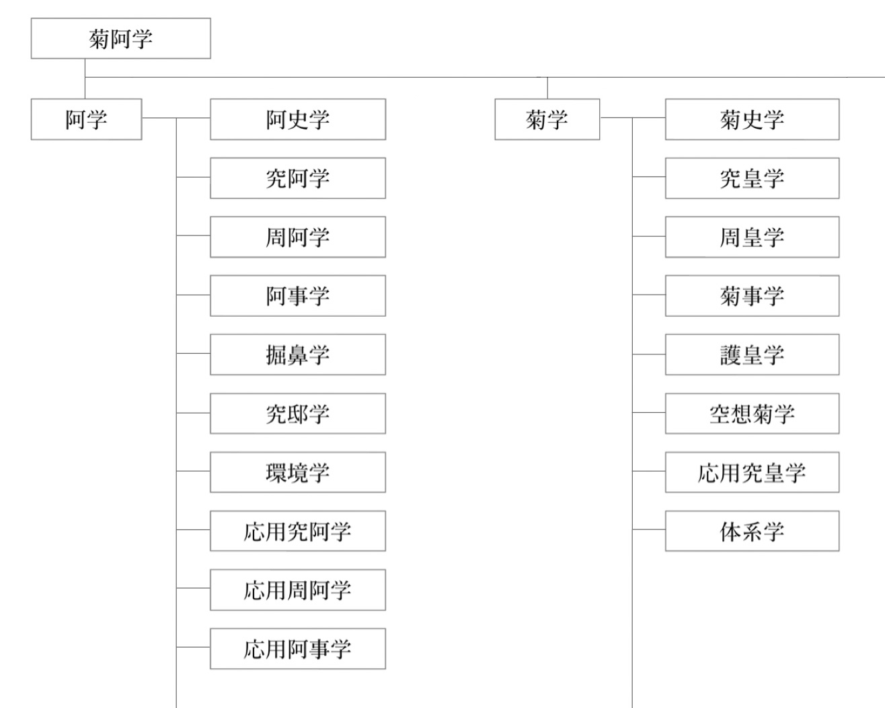

≡ 菊阿百科
菊阿学 - 菊阿百科
アヴィリペディア
菊阿学
菊阿学（キクアガク）は、舎史および郭史に起こった物事を整理し理解する学問。
主に阿学と菊学から成りその総称として使われることが多いが、厳密には舎学と
郭学を包含する巨大な学界である。
概要
「菊阿学」は菊学と阿学の総称であり、別々に成立した二つの学問を統合したものである。「菊阿学」は英語で Avirysanthelogy といい、菊学 Chrysanthelogy と 阿学 Avilogy が語源である。 その定義は期によって異なるが、楼後期では菊子や倫子の言動や事件およびそれに対する周皇・周阿の行動を整理・研究し、後世に語り継ごうとする学問と解釈される。舎期から続く歴史の長い学問であり、その範疇は史学のみならず心理学や生物学・社会学など広域に渡る。[詳しくは 歴史 項目を参照]
歴史
偆学と東金子文化
菊阿学の成立には東金子文化が大きく寄与した。東金子文化は、害悪を傚子化し昇華することで恒常的な謔性を得る文化のことで、東舎の教育体系や舎圏の子質などにより形成されたものと考えられている。東金子文化が形成されるとまず偆学や知学が成立したが、菊阿学はこれらの研究対象を変えただけと捉えることもでき、菊阿学の源流は偆学や知学にあるとされている。偆学では投屑や傚子化、替歌の研究、知学では反知委員会の設立などが行われた。阿学でも替歌研究が受け継がれ反阿運動が展開されたことからも、偆学や知学は菊阿学の礎となっていたことが理解できる。
阿学の初期に作られたとされるくまさんマン (2014?)
阿学の台頭と発展
菊阿学のうち初めに台頭したのは阿学で、舎6期の退阿時に始まったとされる。はじめは倫子のことを深く知ろうという好奇心からなるものだったが、次第に学問化していき卒舎から入郭頃に最も栄えた。当初は倫子事件の学問的魅力が評価されたため阿事学が中心に研究されたが、これが終ると究阿学や掘鼻学といった倫子本人に関心が動き、ついには膨大な阿学データを後世に保存する必要が叫ばれた。
菊学の成立と護藝庁
一方で、東郭では菊学が成立し、阿学者は菊学の研究に移行した。菊学は阿学よりも盛んに研究され、巨大な学問体系を築いた。男児足回部を中心に菊子の保護機関として護藝庁が設立されたが、菊学の中心機関としての役割も担い、菊学は空想菊学などの高度な学問を含む学問系に発展した。
菊阿学への統合と学会機関の成立
卒郭後、菊阿学会が発足し、菊学と阿学を統合して菊阿学としより高度な研究を可能にした。学会は菊阿学を細分して体系化し、また舎学や郭学を取り入れ非菊阿学者にもより高度な研究が可能になるように整理した。菊阿学会は主に菊阿学を保存することを目的にこれを研究する機関として菊阿学の重要な役割を担っている。なお、現代菊阿学の領域内では最も早く台頭したのは偆学で、入阿前のほとんどの研究活動を占めたが、これも初期阿学と同様に学問として行っていたわけでなく娯楽として楽しまれていた。
学問体系

菊阿学会による菊阿学体系図(2019)
菊学や阿学は当初、漠然と菊子あるいは倫子を研究する学問として成立した。その後菊阿学で扱う領域が増え、学問の体系化の必要性が叫ばれた。菊阿学会では、尨大な菊阿学領域を次のように細分化し、体系化している。
学問階級
学問階級は、学問の所属する位置を示すものである。主に学界・学域・学属・学科・学亜・学床の6階級が存在し、それぞれに属す学問を界学・域学・属学・科学・亜学・床学のようにいう。例えば、菊学(属学)は郭学(域学)に属し、護皇学や体系学などの科学はこれに属する。
| 学界 |
菊阿学など、学問単位として単離した学問のこと。数学や化学なども界学に当たる。 |
| 学域 |
学問を発展した場所で分けたもの。多くは東舎で発展した舎学、東郭で発展した郭学、楼所で発展した楼学に分られる。 |
| 学属 |
誰を研究対象としたかで分けたもので、多く対象となった子を学属名に冠する。 |
| 学科 |
学属を何についての学問かで大別したもの。 |
| 学亜 |
学科をさらに細分したもの。 |
| 学床 |
学亜をさらに細分したもの。 |
この頁は構築中です。
最終更新:
2021年10月23日
菊阿百科 アヴィリペディア
コンテンツは、特に記載されていない限り菊阿学会の著作です。